GSEA : Gene Set Enrichment Analysis¶
Enrichment analyses GSEA are based on ranking the genes. In order to take into account both the direction of the deregulation and its significance we order the genes according to :
Knowing that the sign function in \(R\) returns the sign of the average
log2(FC). That is, when the genes are under expressed the value returned
by the function is -1, +1 when the FC is positive and 0 when the gene
is not deregulated.
Taking into account the significance of the deregulation sometimes leads
to complications. Indeed, it happens that the function FindAllMarkers
returns p-values so low that they become zero, which produces Inf values
that cannot be processed by GSEA. To overcome this problem and only for
this case, we replace \(-log10(pval)\) by \(-log10(1e-323)\) because 1e-323
would be the smallest value that could be represented by a computer.
[1] 9.881313e-324
[1] 0
GSEA will calculate an enrichment score for each gene set analysed from this vector containing genes ordered according to their significance.
For each signature (and for each cluster), GSEA will calculate the enrichment score by running the vector of ordered genes, increasing the score if it encounters a gene from the gene set being analysed and decreasing it if it encounters a gene not in the gene set. The enrichment score (ES) is the maximum value during the increment.
The results of the GSEA function will be a dataframe with the
following columns:
ID: Identifier of the gene group being analysedsetSize: Size of the gene groupEnrichmentScore(ES): Enrichment score representing the degree of presence of the gene set in the ordered list of genesNES(Normalized Enrichment Score) : Normalized Enrichment Score such that : \(NES = \frac{actual ES}{mean(ESs Against All Permutations Of The Dataset)}\)p-value: p-value of the enrichment testp.adjust: adjusted p-value of the Benjamini Hochberg testqvalue: q-value after FDR (False Discovery Rate) controlrank: Position in the list of genes for which ES is reachedleading_edge: Three statistics calculated during the analysis:Tags: Percentage of genes in the gene set before or after the ES peak depending on whether it is positive or negativeList: Percentage of genes before or after the ES peak that are positive or negativeSignal: Strength of the enrichment signal calculated: \((Tag)(1 - List)(\displaystyle \frac{N}{N - Nh})\)
cluster: Name of the cluster for which the gene set has been identified as significant
The format of the gene sets used for the GSEA function must be a mapping
table (TERM2GENE) which associates the name of a signature with the genes
which compose it. However, this is not like the gmt format where one row
corresponds to one signature, here there is one row for each possible
(signature/gene) pair. We will use the gene sets from the MSigDB database where
we will focus on the molecular signatures of cell types (Category C8)
and CellMarker another
database which provides us with lists of specific genes for cell types.
The results will be discussed once we have completed the analysis for both databases.
Molecular Signature Database (MSigDB)¶
The Broad Institute's MSigDB database contains several collections of gene signatures:
Hor HallMarks gene sets: A set of gene sets that co-express in identified biological processes or states with respect to other collectionsC1or Positional gene sets : A set of gene sets based on their cytogenetic and chromosomal positionC2or Curated gene sets : A set of gene sets found in databases and in the scientific literature- Biocarta
- KEGG
- PID
- Reactome
- WikiPathways
C3or Regulatory target gene sets : Set of potential microRNA target genes (MIR) or transcription factors (TFT)- MIR: miRDB prediction
- TFT: prediction based on the work of Kolmykov et al. 2021 and Xie et al. 2005
C4or Computational gene sets : Gene set based on two rather cancer-oriented microarray papers (Subramanian, Tamayo et al. 2005 and Segal et al. 2004) that generated over 800 gene sets.C5or Ontology gene sets : Gene sets based on ontology databases.- Gene Ontology (GO): MF, CC, BP
- Human Phenotype Ontology (HPO)
C6or Oncogenic signature gene sets : A set of genes based on microarray results mainly concerning pathways that are often deregulated in cancerC7or Immunologic signature gene sets : Gene sets based on databases of the immune system and its possible perturbations.- ImmuneSigDB (human + mouse)
- VAX: cured by the Human Immunology Project Consortium (HIPC)
C8or Cell type signature gene sets : A set of gene sets corresponding to cell type markers defined mainly in single cell analysis
The R package msigdbr allows to query the database directly. With the
msigdbr function we select the C8 collection in order to obtain the
gene sets corresponding to human cell lines.
We will then apply the GSEA function to each cluster using a
lapply. For each cluster :
- We filter the dataframe of the unfiltered markers result to get only the lines concerning the genes deregulated by the cells of the cluster.
- Run the
GSEAfunction to get the enriched signatures in the marker gene set - Add the cluster name in a new column to the resulting dataframe
- We visualize the results with the function
gseaplot2of the packageenrichRwhich allows to visualize the first 3 signatures
## Retrieve MSigDB Database for human cell types signatures gene sets
C8_t2g <- msigdbr(species = "Homo sapiens", category = "C8") %>%
dplyr::select(gs_name, ensembl_gene)
kable(head(C8_t2g, 10))
| gs_name | ensembl_gene |
|---|---|
| AIZARANI_LIVER_C10_MVECS_1 | ENSG00000175899 |
| AIZARANI_LIVER_C10_MVECS_1 | ENSG00000213088 |
| AIZARANI_LIVER_C10_MVECS_1 | ENSG00000102575 |
| AIZARANI_LIVER_C10_MVECS_1 | ENSG00000139567 |
| AIZARANI_LIVER_C10_MVECS_1 | ENSG00000143537 |
| AIZARANI_LIVER_C10_MVECS_1 | ENSG00000154734 |
| AIZARANI_LIVER_C10_MVECS_1 | ENSG00000163638 |
| AIZARANI_LIVER_C10_MVECS_1 | ENSG00000129467 |
| AIZARANI_LIVER_C10_MVECS_1 | ENSG00000284814 |
| AIZARANI_LIVER_C10_MVECS_1 | ENSG00000069122 |
## Apply GSEA for each cluster
GSEA_list <- lapply(levels(pbmc_markers_annotated$cluster), function(cluster_name){
res_markers <- subset(pbmc_markers_annotated, cluster == cluster_name) #Filter markers dataframe by cluster
## Generate named vector of ranked gene mandatory for GSEA analysis that take into account DE and significativity
geneList_byclus <- sign(res_markers$avg_log2FC) * -log10(ifelse(res_markers$p_val == 0, #Deal with pval = 0
1e-323, #Smallest interpretable number
res_markers$p_val))
names(geneList_byclus) <- res_markers$gene
## Order by avg log FC and significativity
geneList_byclus <- sort(geneList_byclus, decreasing = TRUE)
## Perform GSEA analysis
gseaC8 <- GSEA(geneList_byclus, TERM2GENE = C8_t2g)
gseaC8@result$cluster <- cluster_name #add cluster name as column
print(gseaplot2(gseaC8,
geneSetID = rownames(gseaC8@result %>%
arrange(desc(NES)))[1:ifelse(nrow(gseaC8) < 3,
nrow(gseaC8),
3)],
base_size = 8,
pvalue_table = TRUE,
subplots = 1:2,
title = paste("Cluster", cluster_name)))
return(gseaC8@result) #Return dataframe result
})
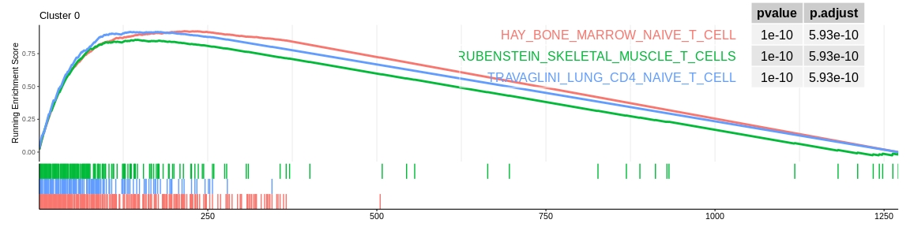
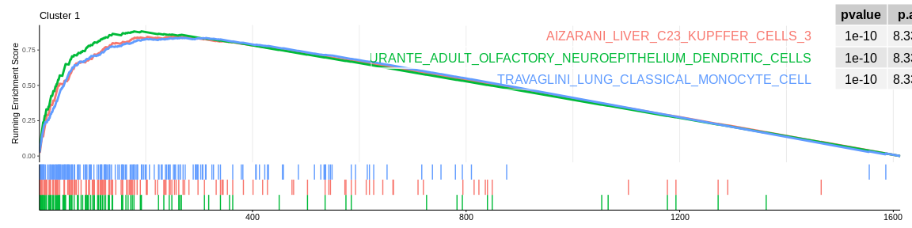
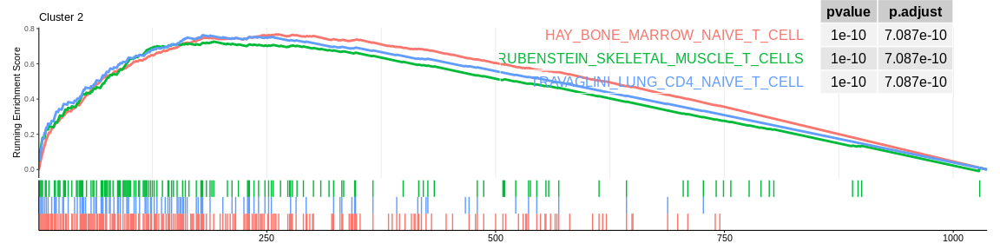
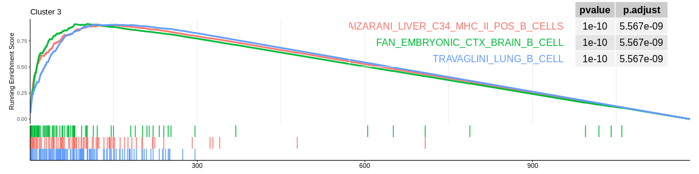
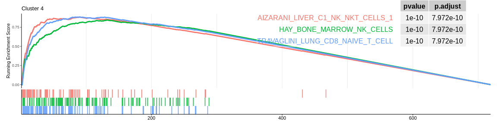
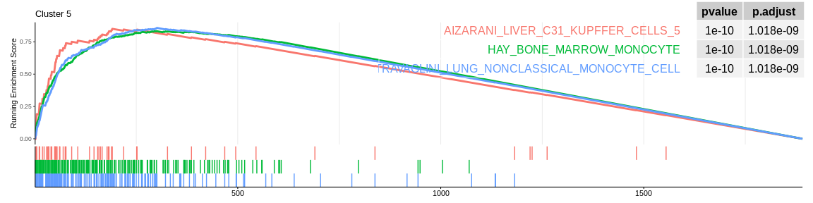
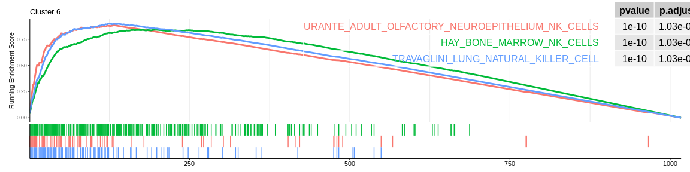
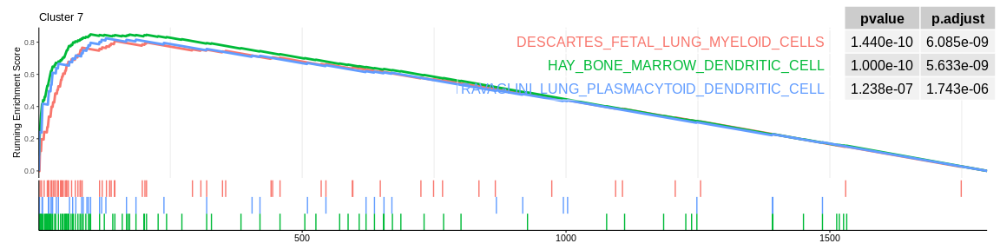
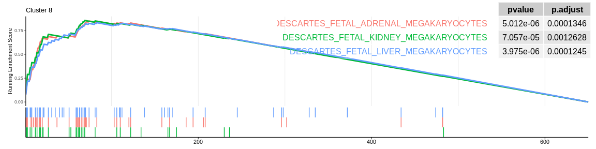
## Concatenate all results in one dataframe
GSEA_res <- do.call("rbind", GSEA_list)
## Group result by cluster (easier to manipulate with dplyr)
GSEA_res <- GSEA_res %>%
group_by(cluster)
## Visualize first 3 signatures for each cluster (removing the vector of genes just for the visualization and the description that match ID column for this dataset MSigDB)
kable(slice_max(
GSEA_res,
n = 3,
order_by = NES,
with_ties = FALSE)[, -c(2, 11)]
)
First Enriched MSigDB gene sets for each cluster
| ID | setSize | enrichmentScore | NES | pvalue | p.adjust | qvalue | rank | leading_edge | cluster |
|---|---|---|---|---|---|---|---|---|---|
| HAY_BONE_MARROW_NAIVE_T_CELL | 208 | 0.9209917 | 3.040190 | 0.00e+00 | 0.0000000 | 0.0000000 | 216 | tags=76%, list=17%, signal=75% | 0 |
| TRAVAGLINI_LUNG_CD4_NAIVE_T_CELL | 116 | 0.9155134 | 2.810199 | 0.00e+00 | 0.0000000 | 0.0000000 | 135 | tags=75%, list=11%, signal=74% | 0 |
| RUBENSTEIN_SKELETAL_MUSCLE_T_CELLS | 153 | 0.8553262 | 2.728288 | 0.00e+00 | 0.0000000 | 0.0000000 | 146 | tags=67%, list=11%, signal=67% | 0 |
| DURANTE_ADULT_OLFACTORY_NEUROEPITHELIUM_DENDRITIC_CELLS | 101 | 0.8823161 | 2.077092 | 0.00e+00 | 0.0000000 | 0.0000000 | 192 | tags=72%, list=12%, signal=68% | 1 |
| AIZARANI_LIVER_C23_KUPFFER_CELLS_3 | 142 | 0.8455834 | 2.014606 | 0.00e+00 | 0.0000000 | 0.0000000 | 257 | tags=68%, list=16%, signal=62% | 1 |
| TRAVAGLINI_LUNG_CLASSICAL_MONOCYTE_CELL | 168 | 0.8365088 | 2.004205 | 0.00e+00 | 0.0000000 | 0.0000000 | 265 | tags=69%, list=16%, signal=64% | 1 |
| HAY_BONE_MARROW_NAIVE_T_CELL | 230 | 0.7672855 | 3.036834 | 0.00e+00 | 0.0000000 | 0.0000000 | 260 | tags=67%, list=25%, signal=64% | 2 |
| TRAVAGLINI_LUNG_CD4_NAIVE_T_CELL | 107 | 0.7627843 | 2.788339 | 0.00e+00 | 0.0000000 | 0.0000000 | 180 | tags=64%, list=17%, signal=59% | 2 |
| RUBENSTEIN_SKELETAL_MUSCLE_T_CELLS | 145 | 0.7263295 | 2.750747 | 0.00e+00 | 0.0000000 | 0.0000000 | 192 | tags=58%, list=19%, signal=55% | 2 |
| TRAVAGLINI_LUNG_B_CELL | 112 | 0.9092172 | 2.110121 | 0.00e+00 | 0.0000000 | 0.0000000 | 121 | tags=68%, list=10%, signal=67% | 3 |
| AIZARANI_LIVER_C34_MHC_II_POS_B_CELLS | 83 | 0.9034082 | 2.074433 | 0.00e+00 | 0.0000000 | 0.0000000 | 152 | tags=80%, list=13%, signal=75% | 3 |
| FAN_EMBRYONIC_CTX_BRAIN_B_CELL | 70 | 0.9140261 | 2.065855 | 0.00e+00 | 0.0000000 | 0.0000000 | 103 | tags=66%, list=9%, signal=64% | 3 |
| TRAVAGLINI_LUNG_CD8_NAIVE_T_CELL | 92 | 0.8842939 | 2.386819 | 0.00e+00 | 0.0000000 | 0.0000000 | 90 | tags=62%, list=13%, signal=62% | 4 |
| HAY_BONE_MARROW_NK_CELLS | 105 | 0.8450920 | 2.289715 | 0.00e+00 | 0.0000000 | 0.0000000 | 132 | tags=68%, list=18%, signal=65% | 4 |
| AIZARANI_LIVER_C1_NK_NKT_CELLS_1 | 70 | 0.8838737 | 2.287887 | 0.00e+00 | 0.0000000 | 0.0000000 | 90 | tags=64%, list=13%, signal=62% | 4 |
| TRAVAGLINI_LUNG_NONCLASSICAL_MONOCYTE_CELL | 163 | 0.8581938 | 2.048972 | 0.00e+00 | 0.0000000 | 0.0000000 | 301 | tags=81%, list=16%, signal=75% | 5 |
| HAY_BONE_MARROW_MONOCYTE | 191 | 0.8332887 | 1.990825 | 0.00e+00 | 0.0000000 | 0.0000000 | 295 | tags=73%, list=16%, signal=68% | 5 |
| AIZARANI_LIVER_C31_KUPFFER_CELLS_5 | 53 | 0.8510682 | 1.952480 | 0.00e+00 | 0.0000000 | 0.0000000 | 191 | tags=68%, list=10%, signal=63% | 5 |
| TRAVAGLINI_LUNG_NATURAL_KILLER_CELL | 108 | 0.8994932 | 2.109996 | 0.00e+00 | 0.0000000 | 0.0000000 | 124 | tags=69%, list=12%, signal=67% | 6 |
| DURANTE_ADULT_OLFACTORY_NEUROEPITHELIUM_NK_CELLS | 72 | 0.8853806 | 2.024887 | 0.00e+00 | 0.0000000 | 0.0000000 | 131 | tags=71%, list=13%, signal=66% | 6 |
| HAY_BONE_MARROW_NK_CELLS | 236 | 0.8420024 | 2.006702 | 0.00e+00 | 0.0000000 | 0.0000000 | 196 | tags=56%, list=19%, signal=59% | 6 |
| HAY_BONE_MARROW_DENDRITIC_CELL | 96 | 0.8483908 | 2.436756 | 0.00e+00 | 0.0000000 | 0.0000000 | 99 | tags=49%, list=6%, signal=49% | 7 |
| TRAVAGLINI_LUNG_PLASMACYTOID_DENDRITIC_CELL | 41 | 0.8240860 | 2.289426 | 1.00e-07 | 0.0000017 | 0.0000011 | 128 | tags=51%, list=7%, signal=49% | 7 |
| DESCARTES_FETAL_LUNG_MYELOID_CELLS | 62 | 0.8072714 | 2.288988 | 0.00e+00 | 0.0000000 | 0.0000000 | 145 | tags=55%, list=8%, signal=52% | 7 |
| DESCARTES_FETAL_KIDNEY_MEGAKARYOCYTES | 32 | 0.8561275 | 1.435384 | 7.06e-05 | 0.0012628 | 0.0011172 | 69 | tags=66%, list=11%, signal=62% | 8 |
| DESCARTES_FETAL_ADRENAL_MEGAKARYOCYTES | 43 | 0.8505604 | 1.424486 | 5.00e-06 | 0.0001346 | 0.0001191 | 74 | tags=63%, list=11%, signal=60% | 8 |
| DESCARTES_FETAL_LIVER_MEGAKARYOCYTES | 55 | 0.8328324 | 1.394386 | 4.00e-06 | 0.0001245 | 0.0001102 | 83 | tags=56%, list=13%, signal=54% | 8 |
CellMarkers¶
CellMarker is a hand-curated database of scientific literature and other resources to describe over 400 cell types (human and mouse only). Human cell markers will be retrieved directly from the Cell Marker site.
After manipulating the data to format a two column dataframe where the first column is the term name and the second column is the gene name associated with that term.
We will then apply the GSEA function for each of the clusters using
a lapply. For each cluster :
- We filter the unfiltered marker result dataframe to retrieve only the rows concerning the genes deregulated by the cluster cells.
- Run the
GSEAfunction to get the enriched signatures in the marker gene set - Add the cluster name in a new column to the resulting dataframe
- We visualize the results with the function
gseaplot2of the packageenrichRwhich allows to visualize the first 5 signatures
## Retrieve Cell Markers Database for human cell types signatures gene sets
cell_marker_data <- vroom::vroom('http://xteam.xbio.top/CellMarker/download/Human_cell_markers.txt')
## Instead of `cellName`, users can use other features (e.g. `cancerType`)
cells <- cell_marker_data %>%
dplyr::select(cellName, geneSymbol) %>% #Select only the two columns
dplyr::mutate(geneSymbol = strsplit(geneSymbol, ', ')) %>% #Split gene names based on the comma
tidyr::unnest() #Flatten gene vector in order to have a line for each gene in terme
## Remove [ and ] found in gene names due to the Cell Marker annotation
cells$geneSymbol <- gsub("\\[|\\]",
"",
cells$geneSymbol,
fixed = FALSE)
kable(head(cell_marker_data, 10))
| speciesType | tissueType | UberonOntologyID | cancerType | cellType | cellName | CellOntologyID | cellMarker | geneSymbol | geneID | proteinName | proteinID | markerResource | PMID | Company |
|---|---|---|---|---|---|---|---|---|---|---|---|---|---|---|
| Human | Kidney | UBERON_0002113 | Normal | Normal cell | Proximal tubular cell | NA | Intestinal Alkaline Phosphatase | ALPI | 248 | PPBI | P09923 | Experiment | 9263997 | NA |
| Human | Liver | UBERON_0002107 | Normal | Normal cell | Ito cell (hepatic stellate cell) | CL_0000632 | Synaptophysin | SYP | 6855 | SYPH | P08247 | Experiment | 10595912 | NA |
| Human | Endometrium | UBERON_0001295 | Normal | Normal cell | Trophoblast cell | CL_0000351 | CEACAM1 | CEACAM1 | 634 | CEAM1 | P13688 | Experiment | 10751340 | NA |
| Human | Germ | UBERON_0000923 | Normal | Normal cell | Primordial germ cell | CL_0000670 | VASA | DDX4 | 54514 | DDX4 | Q9NQI0 | Experiment | 10920202 | NA |
| Human | Corneal epithelium | UBERON_0001772 | Normal | Normal cell | Epithelial cell | CL_0000066 | KLF6 | KLF6 | 1316 | KLF6 | Q99612 | Experiment | 12407152 | NA |
| Human | Placenta | UBERON_0001987 | Normal | Normal cell | Cytotrophoblast | CL_0000351 | FGF10 | FGF10 | 2255 | FGF10 | O15520 | Experiment | 15950061 | NA |
| Human | Periosteum | UBERON_0002515 | Normal | Normal cell | Periosteum-derived progenitor cell | NA | CD166, CD45, CD9, CD90 | ALCAM, PTPRC, CD9, THY1 | 214, 5788, 928, 7070 | CD166, PTPRC, CD9, THY1 | Q13740, P08575, P21926, P04216 | Experiment | 15977065 | NA |
| Human | Amniotic membrane | UBERON_0009742 | Normal | Normal cell | Amnion epithelial cell | CL_0002536 | NANOG, OCT¾ | NANOG, POU5F1 | 79923, 5460 | NANOG, PO5F1 | Q9H9S0, Q01860 | Experiment | 16081662 | NA |
| Human | Primitive streak | UBERON_0004341 | Normal | Normal cell | Primitive streak cell | NA | LHX1, MIXL1 | LHX1, MIXL1 | 3975, 83881 | LHX1, MIXL1 | P48742, Q9H2W2 | Experiment | 16258519 | NA |
| Human | Adipose tissue | UBERON_0001013 | Normal | Normal cell | Stromal vascular fraction cell | CL_0000499 | CD34 | CD34 | 947 | CD34 | P28906 | Experiment | 16322640 | NA |
## Apply GSEA for each cluster
GSEA_CM_list <- lapply(levels(pbmc_markers_annotated$cluster), function(cluster_name){
res_markers <- subset(pbmc_markers_annotated, cluster == cluster_name) #Filter markers dataframe by cluster
## Generate named vector of ranked gene mandatory for GSEA analysis that take into account DE importance and significativity
geneList_byclus <- sign(res_markers$avg_log2FC) * -log10(ifelse(res_markers$p_val == 0, #Deal with pval = 0
1e-323, #Smallest interpretable number
res_markers$p_val))
names(geneList_byclus) <- res_markers$external_gene_name
## Order by avg log FC and significativity
geneList_byclus <- sort(geneList_byclus, decreasing = TRUE)
## Perform GSEA analysis
gseaCM <- GSEA(geneList_byclus, TERM2GENE = cells)
gseaCM@result$cluster <- cluster_name #add cluster name as column
print(gseaplot2(gseaCM,
geneSetID = rownames(gseaCM@result %>%
arrange(desc(NES)))[1:ifelse(nrow(gseaCM) < 3,
nrow(gseaCM),
3)],
base_size = 8,
pvalue_table = TRUE,
subplots = 1:2,
title = paste("Cluster", cluster_name)))
return(gseaCM@result) #Return dataframe result
})
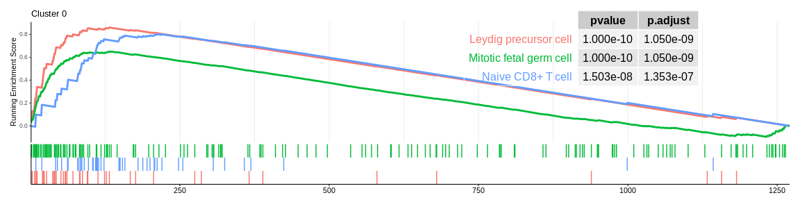
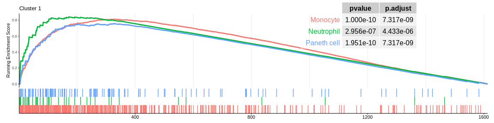
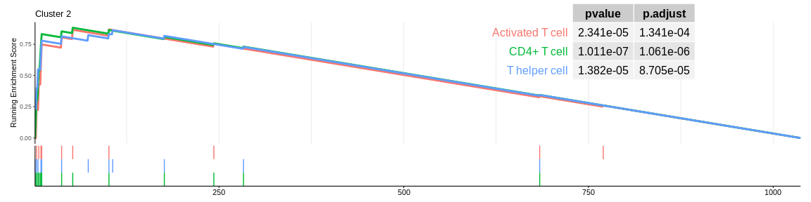
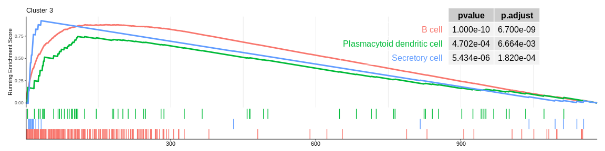
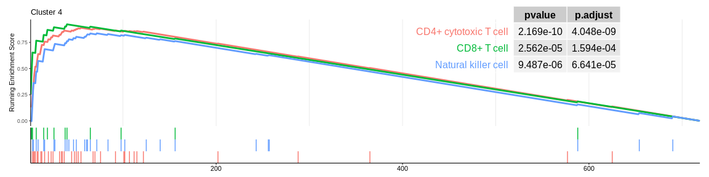
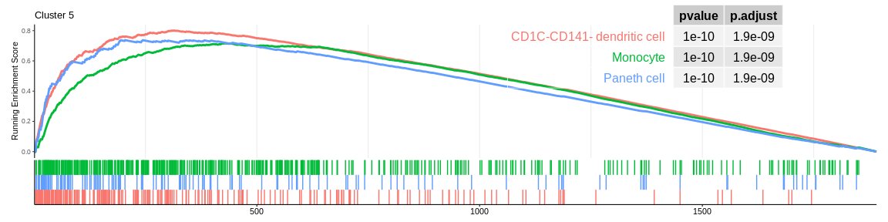
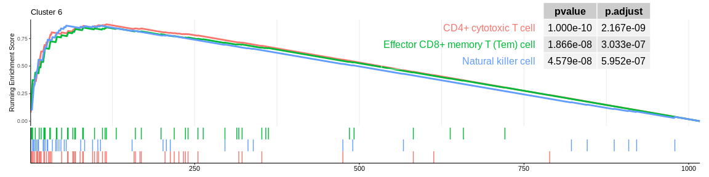
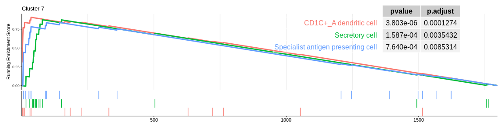
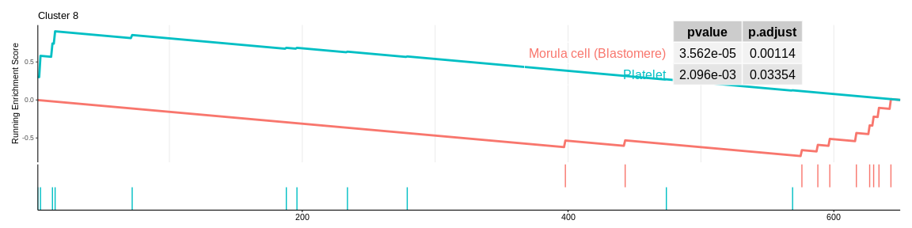
## Concatenate all results in one dataframe
GSEA_CM_res <- do.call("rbind", GSEA_CM_list)
## Group result by cluster (easier to manipulate with dplyr)
GSEA_CM_res <- GSEA_CM_res %>%
group_by(cluster)
## Visualise first 3 signatures for each cluster (removing the vector of genes just for the visualisation and the description that match ID column for this dataset MSigDB)
kable(slice_max(
GSEA_CM_res,
n = 3,
order_by = NES,
with_ties = FALSE)[, -c(2, 11)]
)
First Enriched CellMarker gene sets for each cluster
| ID | setSize | enrichmentScore | NES | pvalue | p.adjust | qvalue | rank | leading_edge | cluster |
|---|---|---|---|---|---|---|---|---|---|
| Leydig precursor cell | 44 | 0.8602093 | 2.304057 | 0.0000000 | 0.0000000 | 0.0000000 | 132 | tags=70%, list=10%, signal=65% | 0 |
| Naive CD8+ T cell | 45 | 0.8009130 | 2.161422 | 0.0000000 | 0.0000001 | 0.0000001 | 212 | tags=78%, list=17%, signal=67% | 0 |
| Mitotic fetal germ cell | 164 | 0.6500399 | 2.116061 | 0.0000000 | 0.0000000 | 0.0000000 | 135 | tags=35%, list=11%, signal=36% | 0 |
| Monocyte | 423 | 0.8131596 | 1.971916 | 0.0000000 | 0.0000000 | 0.0000000 | 332 | tags=54%, list=21%, signal=58% | 1 |
| Neutrophil | 41 | 0.8413770 | 1.815000 | 0.0000003 | 0.0000044 | 0.0000031 | 172 | tags=66%, list=11%, signal=60% | 1 |
| Paneth cell | 119 | 0.7580558 | 1.789124 | 0.0000000 | 0.0000000 | 0.0000000 | 327 | tags=61%, list=20%, signal=53% | 1 |
| CD4+ T cell | 14 | 0.8825202 | 2.128362 | 0.0000001 | 0.0000011 | 0.0000006 | 52 | tags=64%, list=5%, signal=62% | 2 |
| T helper cell | 12 | 0.8630525 | 2.005726 | 0.0000138 | 0.0000871 | 0.0000480 | 106 | tags=75%, list=10%, signal=68% | 2 |
| Activated T cell | 10 | 0.8687549 | 1.946512 | 0.0000234 | 0.0001341 | 0.0000739 | 101 | tags=70%, list=10%, signal=64% | 2 |
| B cell | 178 | 0.8779346 | 2.084143 | 0.0000000 | 0.0000000 | 0.0000000 | 167 | tags=61%, list=14%, signal=61% | 3 |
| Secretory cell | 18 | 0.9223015 | 1.755494 | 0.0000054 | 0.0001820 | 0.0001373 | 32 | tags=61%, list=3%, signal=60% | 3 |
| Plasmacytoid dendritic cell | 62 | 0.7454877 | 1.660767 | 0.0004702 | 0.0066639 | 0.0050254 | 108 | tags=34%, list=9%, signal=32% | 3 |
| CD4+ cytotoxic T cell | 37 | 0.8900805 | 2.126355 | 0.0000000 | 0.0000000 | 0.0000000 | 55 | tags=59%, list=8%, signal=58% | 4 |
| Natural killer cell | 30 | 0.8370655 | 1.936860 | 0.0000095 | 0.0000664 | 0.0000412 | 72 | tags=60%, list=10%, signal=56% | 4 |
| CD8+ T cell | 13 | 0.9231380 | 1.904665 | 0.0000256 | 0.0001594 | 0.0000989 | 40 | tags=69%, list=6%, signal=67% | 4 |
| CD1C-CD141- dendritic cell | 234 | 0.8010932 | 1.915882 | 0.0000000 | 0.0000000 | 0.0000000 | 314 | tags=59%, list=17%, signal=56% | 5 |
| Paneth cell | 143 | 0.7375016 | 1.751359 | 0.0000000 | 0.0000000 | 0.0000000 | 204 | tags=41%, list=11%, signal=40% | 5 |
| Monocyte | 452 | 0.7167580 | 1.727644 | 0.0000000 | 0.0000000 | 0.0000000 | 427 | tags=50%, list=23%, signal=51% | 5 |
| CD4+ cytotoxic T cell | 56 | 0.8789105 | 1.996487 | 0.0000000 | 0.0000000 | 0.0000000 | 116 | tags=66%, list=11%, signal=62% | 6 |
| Natural killer cell | 41 | 0.8669408 | 1.918376 | 0.0000000 | 0.0000006 | 0.0000004 | 55 | tags=49%, list=5%, signal=48% | 6 |
| Effector CD8+ memory T (Tem) cell | 48 | 0.8512421 | 1.905953 | 0.0000000 | 0.0000003 | 0.0000002 | 116 | tags=54%, list=11%, signal=50% | 6 |
| CD1C+_A dendritic cell | 16 | 0.9085712 | 2.256311 | 0.0000038 | 0.0001274 | 0.0000901 | 36 | tags=44%, list=2%, signal=43% | 7 |
| Secretory cell | 16 | 0.8755798 | 2.174381 | 0.0001587 | 0.0035432 | 0.0025050 | 79 | tags=69%, list=4%, signal=66% | 7 |
| Specialist antigen presenting cell | 18 | 0.8389319 | 2.106915 | 0.0007640 | 0.0085314 | 0.0060316 | 144 | tags=50%, list=8%, signal=46% | 7 |
| Platelet | 11 | 0.9030579 | 1.446735 | 0.0020960 | 0.0335357 | 0.0308882 | 14 | tags=36%, list=2%, signal=36% | 8 |
| Morula cell (Blastomere) | 10 | -0.7380276 | -2.285142 | 0.0000356 | 0.0011399 | 0.0010499 | 76 | tags=80%, list=12%, signal=72% | 8 |
Analyzing enrichment results¶
The different GSEA plots represent the first three signatures for which we had the highest enrichment scores. The increment of the score can be followed on the top panel. The position of the signature genes is shown on the bottom panel. For each of the three signatures the p-value and the adjusted p-value are also shown in a table.
Many of the results confirm what was already observed with the over-representation analyses:
- The cluster 0 would be composed of native T cells (either CD4+ for MSigDB or CD8+ for CellMarker)
- cluster 1 would represent monocytes as well as cluster 5 which is close on the UMAP however the enrichment analyses cannot detect their difference, it would be necessary to investigate the entire ClusterProfiler results to differentiate them
- cluster 2 would be composed of CD4+ T cells considered as native for MSigDB (again cluster 2 cells are very close on the UMAP to those of cluster 0)
- cluster 3 is always related to B cells
- cluster 4 and cluster 6 (very close on the UMAP) are still considered to be composed of NK cells. However, both databases also detected that cluster 4 could be composed of CD8+ T cells
- cluster 7 cells would be dentritic cells.
- cluster 8 would be composed of megakaryocytes which are defined as cells at the origin of platelet formation which confirms the previous results. However, CellMarker does not allow us to rule out this cluster since only one signature is significant and the enrichment of this one is negative.
Enrichment analyses are highly dependent on the signature whose enrichment or over-representation is being measured. If the signatures are too general or based on something too far from our dataset (here we were on blood cells) then it will be difficult to get results that make sense the first time. You will have to rely on your own signatures or marker genes to identify your population.